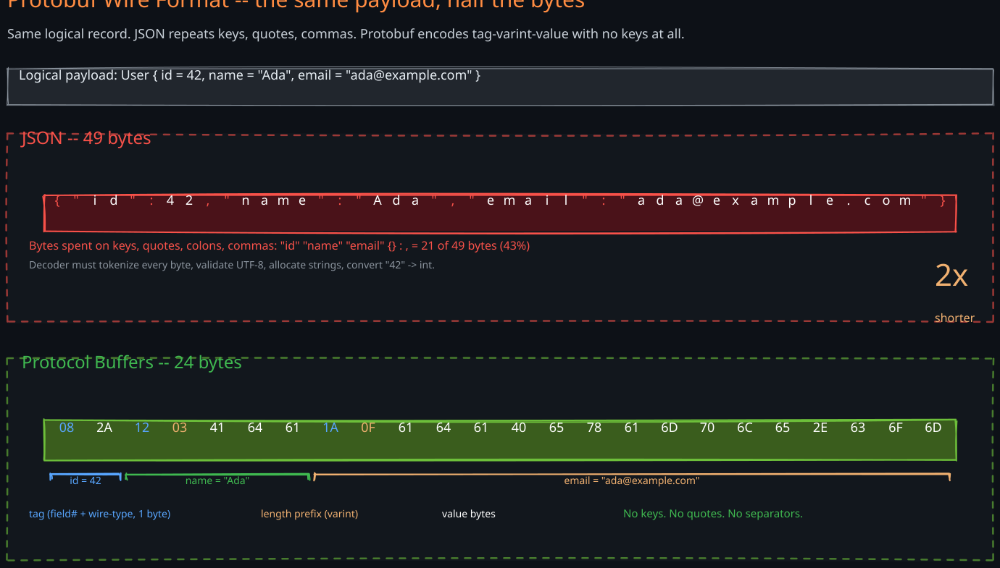
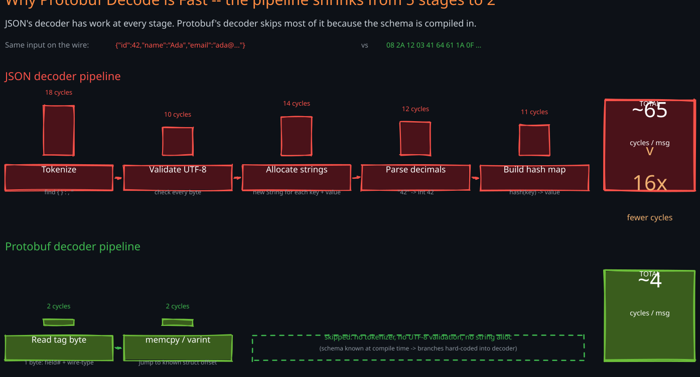
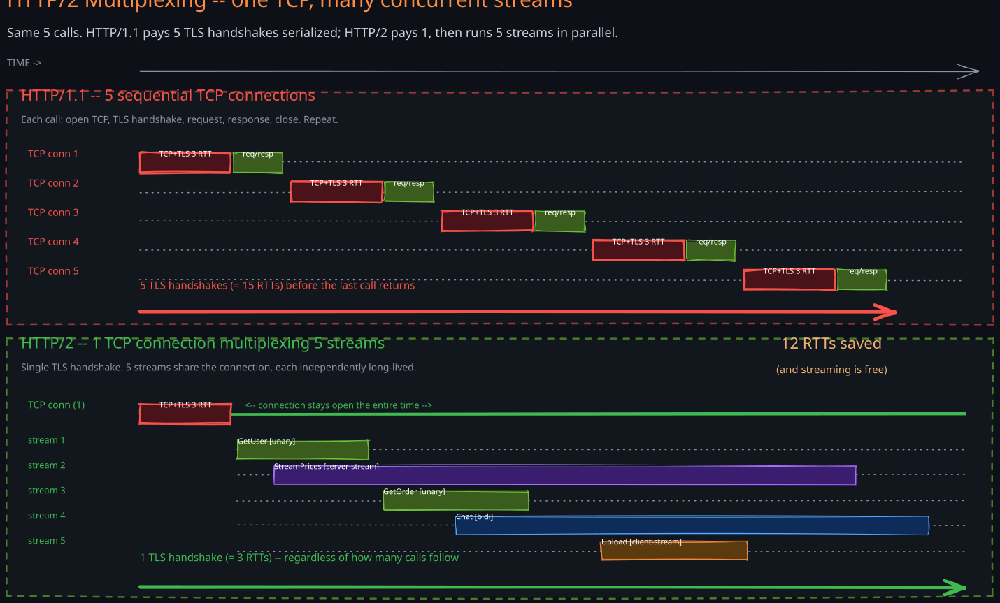
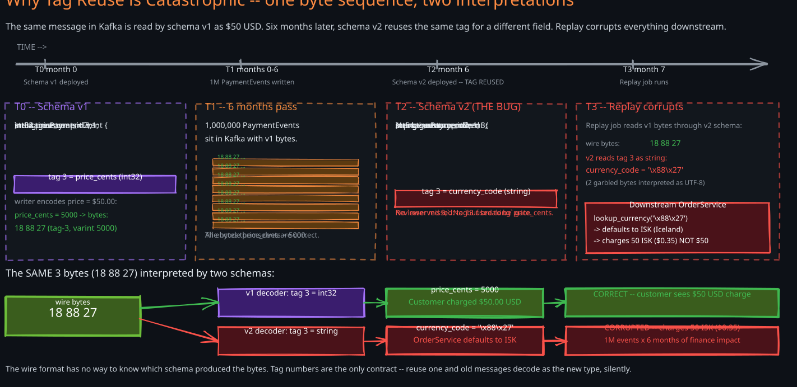
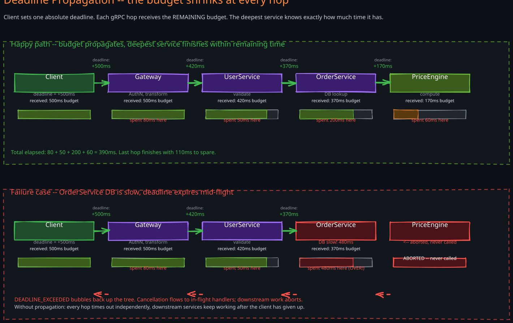
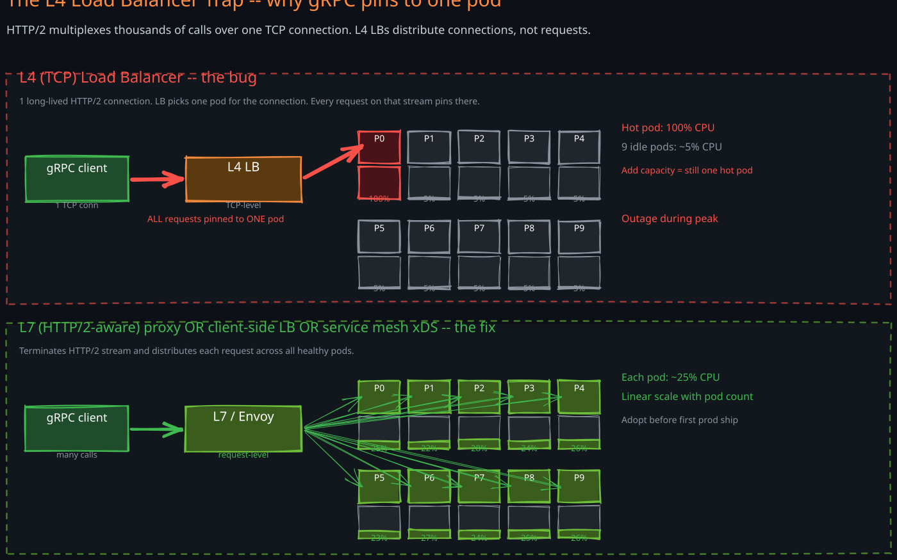

The Story
Google did not invent RPC, but they hit its production version of the problem first. In the mid-2000s, Stubby — the internal predecessor to gRPC — was carrying every internal call inside Google: search index lookups, Bigtable reads, ad targeting, Borg control plane. At that scale, two things became obvious. First, JSON-like text encoding is unaffordable — the CPU spent tokenizing keys and parsing UTF-8 dwarfs the actual work. Second, request-response is not enough — long-lived streams (push updates, telemetry uploads, bidi chats) need first-class support, not WebSocket bolt-ons. Stubby answered both: binary Protocol Buffers for encoding, HTTP/2 multiplexing for transport. In 2015 Google open-sourced the design as gRPC, and within five years it had become the default internal-service protocol at most companies running microservices at scale — Netflix, Square, Lyft, Cloudflare, Spotify.
The reader of this note is a senior engineer fluent in REST who has heard of gRPC but never shipped it in production. The structure mirrors that mental model: every concept is introduced as a delta from REST — what REST does, where it ceilings out, what gRPC changes, and what new operational problems the change creates. There is no “your first .proto file” tutorial. The interesting questions for a senior engineer are not “what does a service definition look like” but “why does my L4 load balancer pin every request to one pod”, “what happens when I rename a field in production”, and “what is the operational cost of gRPC vs the CPU savings”. This note covers those.
1. Why RPC Exists
REST works. It works at every scale up to the point where one of three ceilings becomes load-bearing. RPC frameworks — and gRPC specifically — exist for the workloads that crash through those ceilings.
1. The Three REST Ceilings
- JSON parse cost dominates CPU. A service handling 100K requests per second spends serialization/deserialization CPU on every request. JSON deserialization is text-based: tokenize keys, validate UTF-8, allocate strings, convert numbers from decimal text, build maps. Production profiles consistently show 10-30% of CPU spent in JSON parsing alone at high throughput. At a million RPS across a fleet, that is hundreds of cores doing nothing but parsing text.
- No native streaming. REST is request-response by design. The patterns that need long-lived data flow — push notifications, telemetry ingestion, real-time collaboration — get bolted on via WebSockets, Server-Sent Events, or long-polling. Each is a separate library, separate authentication model, separate load balancer configuration, and separate observability story. The protocol shape forces architectural complexity.
- Contract drift between services. REST contracts live in OpenAPI files that are aspirational — they describe what the server should return, not what it will return. Drift between the documented schema and the runtime behavior is universal. Field renames slip through. Optional-vs-required semantics drift. The bug surfaces in production at the consumer, weeks after the change shipped.
2. What gRPC Changes
gRPC replaces JSON with Protocol Buffers (a binary, schema-first encoding), replaces HTTP/1.1 request-response with HTTP/2 multiplexed streams, and replaces hand-written client libraries with compiler-generated stubs from the .proto schema. One framework, one wire format, one transport, four call shapes.
The next nine sections work through the consequences — three benefits, several new operational hazards — that flow from these three changes.
3. The RPC Family Around gRPC
gRPC is one entry in a broader RPC family worth naming so the framework comparisons later are concrete:
- Apache Thrift (Facebook, 2007) — predates gRPC. Multiple wire formats (binary, compact, JSON), multiple transports (TCP, HTTP). Still in use at Facebook, Twitter (legacy), Pinterest. Loses to gRPC on HTTP/2 streaming and tooling momentum.
- Cap’n Proto (Sandstorm, 2013) — by the original Protocol Buffers author. Zero-copy parse — the wire format is the in-memory layout. Faster than protobuf for read-heavy workloads, less ecosystem support.
- Avro RPC (Hadoop ecosystem) — schema in the message itself. Strong for data pipelines where the producer and consumer schemas evolve independently. Niche outside the Hadoop world.
- Connect-RPC (Buf, 2022) — gRPC-compatible but with a simpler HTTP/1.1 fallback and first-class browser support. Same
.protofiles, broader transport reach.
This note focuses on gRPC because it is the production reality at most companies. The mechanisms — binary encoding, schema evolution, streaming patterns, deadline propagation, the L4 LB trap — generalize to any RPC framework.
2. Protocol Buffers Wire Format
Protocol Buffers is half the value of gRPC. Understanding why the wire format is fast is the difference between using it and operating it.
1. The Schema Defines the Encoding
A .proto file declares each field with a type and a numeric tag:
message User {
int32 id = 1;
string name = 2;
string email = 3;
}The tag (1, 2, 3) is the field’s identity on the wire. The name is for humans only — it never appears in the encoded message. This is the single design decision that makes protobuf small and fast.
2. Tag-Varint-Value Encoding
Each field on the wire is three pieces:
- Tag — a single byte combining the field number and a 3-bit wire-type code (0 = varint, 2 = length-delimited, etc.).
- Value — varint-encoded for integers (7 bits per byte, MSB as continuation), length-prefixed bytes for strings.
- No keys, no quotes, no whitespace, no separators.
Compare the same payload in JSON and protobuf:
JSON: {"id":42,"name":"Ada","email":"ada@example.com"} (49 bytes)
protobuf: 08 2A 12 03 41 64 61 1A 0F 61 64 61 40 65 78 61 6D 70 6C 65 2E 63 6F 6D (24 bytes)
The protobuf payload omits every quote, every colon, every comma, every key name. The field numbers (1, 2, 3) are encoded as one byte each via the tag. Numeric values use varints — 42 fits in one byte, not three text characters.

3. Why Deserialization Is Near a memcpy
Because the schema is known at compile time, the generated decoder does no string allocation for field names, no map lookup, no type discovery. The decoded code path is:
- Read one byte (tag).
- Switch on the field number — known at compile time, branches to a hardcoded handler.
- Copy or interpret the value bytes directly into the corresponding struct field.
There is no tokenizer, no parser stack, no allocation per field. Production benchmarks show 5-10× faster decode and 3-5× smaller payloads compared to JSON for typical service-to-service messages. At 100K RPS that is the difference between needing 50 cores and needing 5.

4. The Theoretical Depth Lives in DDIA Ch04
For the deep treatment of schema evolution as a concept — backward compatibility theory, the distinction between writer’s and reader’s schemas, comparisons with Avro and Thrift — see DDIA Chapter 4. This note focuses on the production-facing rules and the failure modes teams hit.
3. gRPC = Protocol Buffers over HTTP/2
gRPC is two pieces stacked: protobuf as the encoding, HTTP/2 as the transport. Each piece carries half the benefit; the combination is what makes the framework.
1. Why HTTP/2 Matters
HTTP/1.1 is one-request-per-connection (with pipelining a theoretical, browser-broken exception). HTTP/2 multiplexes multiple concurrent streams over a single TCP connection. For gRPC this means:
- Many parallel calls share one TCP connection. A client making 100 concurrent gRPC calls uses one socket, one TLS handshake, one congestion-control state.
- Streaming is first-class. Each HTTP/2 stream is independently long-lived. A gRPC streaming call is just an HTTP/2 stream that stays open.
- Header compression (HPACK). Repeated metadata (auth tokens, trace IDs) is sent once per connection, not per request.
- Server push and prioritization — features less relevant to gRPC but available.

2. The Layered Architecture
Application code (your service)
|
Generated stubs (from .proto)
|
gRPC library (call lifecycle, streaming, deadlines)
|
Protocol Buffers serialization
|
HTTP/2 transport (multiplexing, flow control)
|
TLS (mTLS in practice)
|
TCP
You write application code against generated stubs. The stub handles the conversion from in-language types to protobuf bytes, the gRPC library handles call lifecycle (deadlines, cancellation, status codes), and HTTP/2 handles transport. The application code never sees HTTP, never sees bytes, never sees streams as raw I/O — only typed messages and typed return values.
3. The Generated Stub
The single .proto file produces a server interface and a client class in every supported language (40+). Add a field, regenerate, deploy. There is no separate IDL, no separate client SDK to maintain, no drift between server and client. The schema is the contract.
4. Four Communication Patterns
HTTP/2’s stream abstraction lets gRPC expose four call shapes from one framework. Each is one line of .proto syntax.
1. The Four Patterns
- Unary —
rpc GetUser(UserRequest) returns (UserResponse);— one request, one response. The 90%-case, equivalent to a REST call. Use for: anything CRUD-shaped. - Server streaming —
rpc ListEvents(EventQuery) returns (stream Event);— one request, the server pushes a stream of responses. Use for: feeds, log tailing, price tick streams, change-data-capture subscriptions. Replaces SSE. - Client streaming —
rpc UploadMetrics(stream MetricBatch) returns (UploadAck);— the client streams many requests, the server responds once. Use for: telemetry batching, chunked uploads, log shipping. - Bidirectional streaming —
rpc Chat(stream ChatMessage) returns (stream ChatMessage);— both sides send streams independently, asynchronously. Use for: real-time collaboration, voice/video signaling, agent-to-agent protocols, anything where both sides need to push.
2. What This Replaces
Without gRPC, each pattern would need a separate technology:
- Unary → REST.
- Server streaming → Server-Sent Events.
- Client streaming → multipart upload, custom chunking.
- Bidirectional → WebSockets with hand-rolled framing.
gRPC collapses these into one framework with one schema language, one auth model, one observability story, and one set of client libraries. The operational simplification is the under-appreciated win — teams that already adopted WebSockets often migrate to gRPC bidi streaming for one reason: deleting custom framing code.
3. The Streaming Tax
Streaming is not free. Three operational concerns:
- Long-lived connections complicate load balancing (Section 7).
- Backpressure is the application’s problem — gRPC gives you a stream, you decide what to do when the consumer is slower than the producer. Naive code buffers without bound and OOMs.
- Connection lifecycle is harder to debug than request-response. A stream that hangs is harder to triage than a request that 5xx’s. Telemetry on stream open/close/error counts is mandatory.
5. Schema Evolution
Protobuf’s evolution model is one of its strongest selling points and one of its sharpest knives. Get it right and you ship breaking changes invisibly. Get it wrong and you corrupt production data.
1. The Rules
What is safe (forward and backward compatible):
- Add a new field with a new tag number. Old clients ignore unknown fields. New servers see the field as default-valued from old clients.
- Mark a field
reserved. Prevents the tag number from being reused — the schema enforces it. - Rename a field. The wire format uses tag numbers, not names. A rename is a no-op on the wire.
- Add a new RPC method. Old clients do not call it.
- Add a new message type. Unreferenced messages cost nothing.
What is unsafe (breaks compatibility silently):
- Change a field’s type (e.g.,
int32→string). Old decoders interpret the bytes with the old type and produce garbage. There is no schema check at runtime. - Change a field’s tag number. Equivalent to deleting the old field and adding a new one — old clients silently drop the data.
- Reuse a deleted tag number for a new field. If old messages with the old field still exist in queues or storage, the new decoder reads them as the new type. Catastrophic when data is at rest.
- Change a field from optional to required (in proto2; proto3 removes the distinction). Old senders are now invalid.

2. The CI Gate: buf breaking
Manually catching these is a tax on every code reviewer. The production answer is buf breaking — a CI tool from Buf Technologies that compares the proposed .proto change against the main branch and rejects unsafe changes. Configure it as a required check on every PR touching .proto files. Without this gate, schema drift is one tired reviewer away from a wire-format incident.
3. The reserved Discipline
When deleting a field, mark the tag as reserved:
message User {
reserved 3;
reserved "email"; // also reserve the name to catch accidental re-use
int32 id = 1;
string name = 2;
// field 3 is reserved — DO NOT REUSE
}This costs nothing and prevents the catastrophic reuse-tag bug. Make it a team habit; even better, enforce via lint.
6. Errors, Deadlines, and Cancellation
gRPC’s call-level features are what make it a framework, not just a wire format. Three pieces matter in production.
1. Status Codes
gRPC defines a fixed set of 17 status codes — OK, CANCELLED, DEADLINE_EXCEEDED, NOT_FOUND, RESOURCE_EXHAUSTED, UNAVAILABLE, etc. Every RPC returns either OK or one of these failure codes plus an optional message and structured details. Compared to HTTP status codes:
- Errors are semantic, not transport-level.
NOT_FOUNDmeans the resource is missing — not “HTTP couldn’t route the request.” The distinction matters when an HTTP proxy in front of gRPC returns its own 404. - Fewer codes, sharper meanings. No “is
409 Conflictan idempotency conflict or a business-rule violation” debates. - Structured details.
error_details.protogives typed error payloads —BadRequest,QuotaFailure,RetryInfo— that clients can switch on programmatically instead of parsing strings.
2. Deadlines (Not Timeouts)
A timeout is a per-call wall-clock limit. A deadline is an absolute point in time after which the call is invalid — and it propagates through downstream calls.
A client says “this entire operation must finish by T”. The server receives the deadline as metadata. If the server makes a downstream gRPC call, it passes the remaining deadline. By the time the call reaches a service 4 hops deep, that service knows exactly how much time is left.
The benefit: no wasted work. If the request will time out at the edge, the deepest service knows it and can abort early. REST has no equivalent; teams reimplement this with custom headers and almost always get it wrong (passing absolute time without clock-skew awareness, forgetting to propagate, not reducing the deadline at each hop).

3. Cancellation
When a client cancels — explicitly, or by closing the connection, or by hitting its deadline — the cancellation propagates to the server’s call context. The server’s handler sees a cancelled context and can abort I/O in progress. This propagates through downstream gRPC calls automatically.
Production failure mode: handlers that ignore context cancellation. A loop that does not check the context keeps running after the client disconnects, holding DB connections and burning CPU on work no one will read. Pattern: every loop, every blocking call must respect the context. This is one of the highest-signal code-review items on a gRPC team.
7. The L4 Load Balancer Trap
The single most common operational bug in gRPC adoption. Every team that does not know about it ahead of time hits it.
1. The Failure
A team migrates from REST to gRPC. They run 10 server pods behind their cloud load balancer (an L4 / TCP load balancer — AWS NLB, GCP Network LB, Azure L4 LB). Within minutes, one pod is at 100% CPU and the other nine are idle. They scale to 20 pods; the same one pod is still at 100%.
2. The Mechanism
L4 load balancers distribute TCP connections, not requests. HTTP/1.1 with REST opens a new TCP connection per request (or a small connection pool), so connection distribution looks like request distribution.
gRPC uses HTTP/2: one long-lived TCP connection multiplexes thousands of requests. The L4 LB sees one connection from each client, picks one pod for that connection, and pins every request on that stream to that pod for the connection’s lifetime. With N clients and M pods where N ≈ M, you get a uniform-random pinning — and the variance crushes you.

3. The Fixes
Three production solutions, in increasing capability:
- L7 (HTTP/2-aware) proxy. Envoy, NGINX with HTTP/2, AWS ALB. Terminates the HTTP/2 stream and distributes individual requests across pods. Operationally heavier than L4 but solves the problem cleanly.
- Client-side load balancing. The client resolves all server endpoints (via DNS, Consul, or gRPC’s
pick_first/round_robinpolicies) and opens one connection per backend. The client picks the backend per request. Eliminates the proxy entirely; the gRPC client library does the work. - xDS (Envoy’s discovery API) with a service mesh. Sidecar proxies (Envoy, Linkerd-proxy) on every pod handle service discovery and load balancing. Centralized control plane pushes endpoint lists and policies. This is the production answer at scale and one of the strongest reasons teams adopt a service mesh.
4. Why It Bites Every Team Once
The failure happens after migration, not during it. Load tests at low concurrency look fine because few connections are open. Canary deploys to a few pods look fine because the connection-to-pod ratio is small. The failure surfaces in production at full traffic, often during the first incident response.
Make the L4-vs-L7 decision before the first gRPC service ships. The cheapest fix is choosing the right LB upfront.
8. gRPC-Web and the Browser Problem
gRPC does not work in browsers. This is the single biggest gap and the reason public APIs rarely use gRPC.
1. Why Browsers Cannot Speak gRPC
Browsers cannot send arbitrary HTTP/2 frames. The Fetch API and XHR abstract HTTP/2 away — JavaScript code cannot set the HTTP/2 trailers gRPC uses for status codes, cannot send raw binary streams in the way client streaming requires, and cannot multiplex independently of the browser’s connection pool.
2. gRPC-Web: The Workaround
gRPC-Web is a protocol translation: a JavaScript client speaks a simplified gRPC variant over HTTP/1.1 or HTTP/2, and a proxy (Envoy, Connect-RPC, gRPC-Web proxy) translates to standard gRPC for the backend. The costs:
- Server streaming is supported. Unary and server streaming work cleanly.
- Client streaming and bidi streaming are not supported in standard gRPC-Web. The browser cannot send a request stream in a way the proxy can translate. Connect-RPC adds some support via WebSocket fallback but still hits browser limits.
- Extra hop. Every browser request now traverses a translation proxy that decodes one wire format and encodes another. Latency and operational complexity both increase.
- Binary in the browser. Protobuf payloads are not human-readable in DevTools. Debugging requires browser extensions.
3. The Practical Architecture
For browser-facing APIs, most teams pick one of three patterns:
- REST or GraphQL at the edge. Browsers talk REST/GraphQL to an API gateway; gateway translates to gRPC for internal services. This is the dominant pattern — see Section 9.
- gRPC-Web for tightly-coupled SPAs. Acceptable when the frontend and backend ship together and the team owns both. Loses unary-only flexibility.
- Connect-RPC. Buf’s protocol: same
.protofiles, browser-friendly transport. Gaining adoption for teams that want one schema for both internal and browser-facing services.
For native mobile (iOS, Android, React Native) gRPC works natively — no browser problem. Mobile is where gRPC’s serialization savings matter most due to constrained CPU and metered bandwidth.
9. Production Architecture: Where gRPC Lives
A senior engineer should be able to draw the production shape of a gRPC system on a whiteboard. The shape is dictated by the browser problem (Section 8), the L4 LB trap (Section 7), and the operational benefits of binary protocols (Section 2).
1. The Three Zones
- Public internet — REST or GraphQL. Browsers, third-party integrators, mobile apps (sometimes), partners. JSON over HTTP/1.1 or HTTP/2 with TLS. CDN-friendly, debuggable in DevTools.
- API gateway — translation layer. Kong, Envoy, Apigee, AWS API Gateway, custom Go services. Authenticates the external request, transforms JSON → protobuf, calls internal gRPC services, transforms responses back.
- Internal mesh — gRPC. Service-to-service traffic inside the trust boundary. mTLS, deadline propagation, structured errors, four streaming patterns. Sidecar proxies (Envoy, Linkerd) handle service discovery and load balancing.
2. Why This Shape Wins
The translation cost at the gateway is paid once per request. Inside the mesh, every hop is cheap: small payloads, fast decode, native streaming. Public consumers get the JSON/REST ergonomics they expect; internal services get the CPU and latency wins.
The alternative — gRPC end-to-end including browsers — pays the gRPC-Web tax on every external request and limits public-API surface to gRPC-friendly clients. Almost no production system makes this tradeoff.
3. The Polyglot Win
Generated stubs in 40+ languages mean a Go service can call a Python service can call a Java service with type-safety and no manual serialization code in any of them. The .proto file is the team contract; the language is an implementation detail. This is the under-appreciated reason gRPC won at companies with polyglot service inventories — the alternative (per-language HTTP clients with hand-maintained types) becomes a coordination tax.
10. When NOT to Use gRPC
gRPC is the right choice for most internal-service-to-service workloads at scale. It is the wrong choice in five concrete situations:
- Browser-facing public APIs. The gRPC-Web tax is real and the limits are restrictive. Public APIs that need broad reach should stay on REST + OpenAPI or GraphQL. (Section 8.)
- High-cache-rate read endpoints. REST GETs with
Cache-Controlheaders leverage decades of CDN, browser-cache, and proxy infrastructure. A gRPC unary call cannot be cached by any of these. If your endpoint isGET /content/{id}hit a billion times a day, REST wins on the cache architecture alone. - Small teams without observability investment. gRPC’s failure modes (L4 LB pinning, cancellation leaks, schema drift) are harder to diagnose than REST’s. Traces are mandatory, not optional. A two-person team without a tracing system will out-deliver by staying on REST.
- APIs primarily consumed by humans with
curland Postman. Debuggability matters. JSON in a terminal is readable; protobuf bytes are not.grpcurlandbloomrpcclose the gap but never close it entirely. - BFFs facing untyped clients. A BFF aggregating for a single SPA can use gRPC internally but typically exposes REST or GraphQL outward — its consumer is a JavaScript bundle that cannot afford the gRPC-Web limits.
1. The Decision in One Sentence
Use gRPC for internal service-to-service traffic at scale; use REST or GraphQL at the edge. Almost every production system at non-trivial scale converges on this split, and almost every team that ignores it pays for the lesson once.
For the full multi-protocol decision matrix see API Protocols Compared § 8. For BFF-vs-direct-gRPC decisions see Backend for Frontend. For the deeper theory of schema evolution see DDIA Chapter 4.
Revision Summary
- gRPC exists for workloads that hit one of REST’s three ceilings: JSON parse CPU at high throughput, no native streaming, and silent contract drift. It replaces JSON with protobuf, replaces HTTP/1.1 request-response with HTTP/2 multiplexed streams, and replaces hand-written clients with compiler-generated stubs.
- Protocol Buffers wire format is tag-varint-value with no keys, no quotes, no separators. The schema is known at compile time, so deserialization is near a
memcpy— typically 5-10× faster and 3-5× smaller than JSON for typical payloads. - gRPC layers protobuf over HTTP/2. HTTP/2 multiplexing makes streaming free; the same TCP connection carries thousands of concurrent calls with HPACK-compressed headers and independent stream lifecycles.
- Four communication patterns from one framework: unary (REST replacement), server streaming (SSE replacement), client streaming (chunked upload), bidi streaming (WebSocket replacement). Each is one line of
.protosyntax. - Schema evolution is safe for adds and reserved deletions but catastrophic for tag-number reuse or type changes.
buf breakingin CI is the production guardrail; without it, drift is one tired reviewer away from a wire-format incident. - Status codes are semantic (17 fixed codes), errors carry structured details, and deadlines propagate through the call tree — a feature REST has no equivalent for. Cancellation flows from client to deepest server; handlers that ignore context cancellation are a top-tier code-review failure.
- The L4 load balancer trap is the most common gRPC operational bug: long-lived HTTP/2 connections pin to one pod, creating uniform-random hot-spotting. Fix with L7 proxies, client-side LB, or a service mesh — pick before the first service ships.
- Browsers cannot speak gRPC. gRPC-Web works for unary and server streaming via a translation proxy but breaks client and bidi streaming. The dominant production shape is REST or GraphQL at the edge, gRPC inside the mesh.
- Production architecture: three zones — public (REST/GraphQL), gateway (translation), internal mesh (gRPC). The shape is forced by the browser problem, the L4 LB trap, and the operational economics of binary protocols. Polyglot service inventories benefit most from the schema-as-contract model.
- Avoid gRPC for browser-facing public APIs, high-cache-rate read endpoints, small teams without observability investment, human-debugged endpoints, and BFFs facing untyped clients. Use gRPC for internal service-to-service at scale; use REST or GraphQL at the edge.
Deep Understanding Questions
-
JSON parse cost in the wild. A REST service runs at 80% CPU at 50K RPS. Profiling shows 25% of CPU in JSON parsing. The team is debating migrating to gRPC. Estimate the throughput gain assuming protobuf decode is 8× faster, and explain what else changes in your capacity planning (memory, GC, network bandwidth, sidecar overhead) — what is the realistic CPU win after all second-order effects? Ans:
-
The tag-reuse incident. A team deletes field
3from aUsermessage, deploys the schema change, then six months later adds a new field at tag3for a different purpose. There is an offline batch job that replays Kafka messages from 9 months ago. Walk through the corruption: what the consumer reads, what the consumer writes downstream, how the bug surfaces, and how you would design schema review to make this impossible. Ans: -
L4 LB pinning at scale. You have 200 client pods and 50 server pods behind an L4 LB. Each client opens one gRPC connection. Assume uniform-random pinning. What is the expected load distribution across server pods, and what is the probability that the most-loaded pod is at >2× the mean? At what client/server ratio does the variance become unacceptable, and which fix (L7 proxy, client-side LB, service mesh) would you choose for a 1000-service inventory? Ans:
-
Deadline propagation correctness. A request enters the system with a 500 ms deadline at the gateway. It traverses 4 internal hops via gRPC. Walk through what each service sees as its deadline, what happens if hop 3 takes 480 ms, and what bug appears if a developer hardcodes a 1-second timeout on a downstream call instead of using the propagated deadline. How would you detect this bug in code review and in production telemetry? Ans:
-
Cancellation leak audit. Audit a gRPC handler that does the following: receives a request, opens a DB transaction, runs a 10-second query, makes 3 downstream gRPC calls, commits the transaction. The client cancels after 2 seconds. Identify every place this handler could leak resources, what the correct cancellation-aware version looks like, and what observability you would add to detect cancellation leaks in production. Ans:
-
gRPC vs REST for a public API. A fintech startup is building a public API for partners. The team’s instinct is to use gRPC for type-safety and performance. Argue against — list five concrete operational and ecosystem reasons REST + OpenAPI is the right answer for this use case, and identify the one scenario where you would reverse and recommend gRPC. Ans:
-
Streaming backpressure. A server-streaming RPC pushes events to a slow client. The client processes 10 events/sec; the server has 10,000 events/sec available. Without explicit backpressure, what happens to memory on the server? Walk through the gRPC flow-control mechanism (HTTP/2 stream windows) and explain why naive application code can still OOM despite the protocol’s built-in backpressure. How would you design the application-level buffer and overflow policy? Ans:
-
Migration sequencing. You inherit a 40-service REST monolith-of-microservices and decide gRPC is the right end state for internal traffic. Design the migration: in what order do you convert services, what runs at the boundary during the transition, how do you handle the L4 LB problem mid-migration, and what is the smallest scope where you can prove the CPU win to justify the operational investment? Ans: